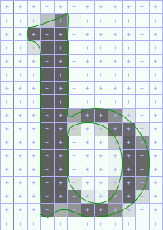
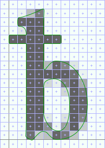
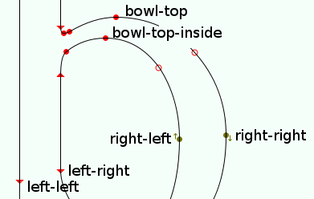
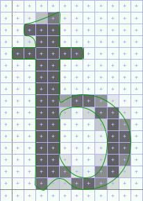

Tutorial 3: Working with FontForge auto-instructions
The easiest way to invoke the FontForge auto-instructor in the context of an Xgridfit program is with merge-mode. It is also possible to copy and revise instructions generated by the auto-instructor. Here is a practical example drawn from Junicode Regular, in which b is instructed "by hand," while uni0180 (bbar) has been auto-instructed.
Although the outlines of b and uni0180 are exactly the same except for the bar, the instructed versions of these glyphs look rather different at 20 ppem:
|  |  |
There are various subtle differences here, but the obvious ones are that the top of the bowl is thicker and higher in uni0180 than in b and that uni0180 is narrower. If we can change these things, the two glyphs will match reasonably well.
The first step is to get a copy of the program for uni0180. The easiest way to do so is to run a little Xgridfit utility, getinstrs, against a .ttf or .sfd file containing the glyph with its instructions (the --xgridfit option ensures that we end up with a complete, valid Xgridfit file):
getinstrs --xgridfit Junicode-Regular.ttf uni0180 > uni0180.xgf
Now we're ready to edit the instructions. Here is the program, in which we have identified the problem areas by running the FontForge TrueType debugger. We've inserted comments to mark the places:
<?xml version="1.0"?>
<xgridfit xmlns="http://xgridfit.sourceforge.net/Xgridfit2">
<glyph ps-name="uni0180" xml:id="uni0180" init-graphics="no">
<command name="SVTCA" modifier="y-axis"/>
<push>3 1 0</push>
<command name="CALL"/>
<push>9</push>
<command name="SHP" modifier="rp1"/>
<push>60</push>
<command name="MDRP" modifier="min,rnd,black"/>
<push>27 3 0</push>
<command name="CALL"/>
<push>24</push>
<command name="MDRP" modifier="min,rnd,black"/>
<push>27 24 10</push>
<command name="CALL"/>
<push>64 27 31 9</push>
<command name="CALL"/>
<!-- top of bowl -->
<push>42 52 3 31 13</push>
<command name="CALL"/>
<push>42</push>
<command name="MDRP" modifier="min,rnd,black"/>
<push>42 52 10</push>
<command name="CALL"/>
<push>64 42 46 9</push>
<command name="CALL"/>
<!-- end top of bowl -->
<push>20 17 3 31 13</push>
<command name="CALL"/>
<push>38</push>
<command name="SHP" modifier="rp1"/>
<push>20</push>
<command name="MDRP" modifier="min,rnd,black"/>
<push>34</push>
<command name="SHP" modifier="rp2"/>
<command name="SVTCA" modifier="x-axis"/>
<push>63</push>
<command name="MDAP" modifier="rnd"/>
<push>15</push>
<command name="MDRP" modifier="rp0,rnd,white"/>
<push>21</push>
<command name="SHP" modifier="rp2"/>
<push>57</push>
<command name="MDRP" modifier="min,rnd,black"/>
<push>32 39</push>
<command name="SHP" modifier="rp2"/>
<command name="SHP" modifier="rp2"/>
<push>57 15 10</push>
<command name="CALL"/>
<push>64 57 37 9</push>
<command name="CALL"/>
<push>15 57 10</push>
<command name="CALL"/>
<push>64 15 26 9</push>
<command name="CALL"/>
<push>64 15 19 9</push>
<command name="CALL"/>
<!-- width of character -->
<push>57</push>
<command name="SRP0"/>
<push>49 1</push>
<command name="CALL"/>
<push>0</push>
<command name="MDRP" modifier="min,rnd,black"/>
<!-- end width of character -->
<push>64 1</push>
<command name="CALL"/>
<push>57 15</push>
<command name="SRP1"/>
<command name="SRP2"/>
<push>7 10 30</push>
<command name="IP"/>
<command name="IP"/>
<command name="IP"/>
<push>49</push>
<command name="SRP1"/>
<push>6 3 46</push>
<command name="IP"/>
<command name="IP"/>
<command name="IP"/>
<command name="SVTCA" modifier="y-axis"/>
<push>60 3</push>
<command name="SRP1"/>
<command name="SRP2"/>
<push>6 13</push>
<command name="IP"/>
<command name="IP"/>
<push>52</push>
<command name="SRP1"/>
<push>0</push>
<command name="IP"/>
<command name="IUP" modifier="y"/>
<command name="IUP" modifier="x"/>
</glyph>
</xgridfit>
The FontForge code looks a little obscure because it does much of its work by making calls to a library of functions, which the auto-instructor inserts into every font. (These well-crafted functions may also be of interest to Xgridfit programmers. You can get access to them via the macros defined in ff-functions.xgf, found in the utils subdirectory of the Xgridfit directory tree). However, it is not really necessary to understand the function calls to see in general terms what the auto-instructor is doing.
We'll start by defining some constants for point numbers: first the two points that define the top and inside top of the bowl, and next some key points for the straight stem on the left of the glyph and the round stem on the right:
<constant name="bowl-top" value="46"/>
<constant name="bowl-top-inside" value="52"/>
<constant name="left-left" value="15"/>
<constant name="left-right" value="57"/>
<constant name="right-right" value="0"/>
<constant name="right-left" value="49"/>
|  |
The next step is to notice how the Junicode b is instructed. There, bowl-top is positioned at the x-height with a control value (lc-x-height), and the distance between bowl-top and bowl-top-inside is regulated with another control value (lc-horz-thin-curve). We'll comment out the offending instructions and replace them with Xgridfit code that employs the same control values:
<move distance="lc-x-height">
<point num="bowl-top"/>
<move distance="lc-horz-thin-curve">
<point num="bowl-top-inside"/>
</move>
</move>
<!-- top of bowl
<push>42 52 3 31 13</push>
<command name="CALL"/>
<push>42</push>
<command name="MDRP" modifier="min,rnd,black"/>
<push>42 52 10</push>
<command name="CALL"/>
<push>64 42 46 9</push>
<command name="CALL"/>
-->
Next, the FontForge auto-instructor has instructed along the x-axis by first positioning left-left, then left-right relative to that, then right-left, then right-right. In other words, it has gone strictly left-to-right. The Junicode b is instructed in a different order: first the left stem is regulated, then the overall width of the glyph (left-left to right-right, with a control value), and finally the right stem. We can approximate this behavior in revising the FontForge instructions (we'll ignore the width of the left stem for now):
<move distance="bpq-char-width">
<reference>
<point num="left-left"/>
</reference>
<point num="right-right"/>
<move distance="lc-vert-curve">
<point num="right-left"/>
</move>
</move>
<!-- width of character
<push>57</push>
<command name="SRP0"/>
<push>49 1</push>
<command name="CALL"/>
<push>0</push>
<command name="MDRP" modifier="min,rnd,black"/>
-->
We'll address two more details before testing the code. First, the FontForge auto-instructor regulates the left sidebearing with an MDRP instruction:
<push>63</push>
<command name="MDAP" modifier="rnd"/>
<push>15</push>
<command name="MDRP" modifier="rp0,rnd,white"/>
This is the equivalent of the following:
<move>
<point num="left-sidebearing"/>
<move>
<point num="left-left"/>
</move>
</move>
But Junicode uses a control value to regulate this distance. We can revise the code very simply, by adding the control value and changing MDRP to MIRP.
<push>63</push>
<command name="MDAP" modifier="rnd"/>
<push>15 b-left-side</push>
<command name="MIRP" modifier="rp0,rnd,white"/>
Or we could replace the code (omitting to touch the left-sidebearing point, since this is unnecessary):
<move distance="b-left-side">
<reference>
<point num="left-sidebearing"/>
<reference>
<point num="left-left"/>
</move>
Junicode also uses a control value to regulate standard vertical stems, and so we can make a similar change to the way the auto-instructor regulates the distance between left-left and left-right. We'll just change this:
<push>57</push>
<command name="MDRP" modifier="min,rnd,black"/>
to this:
<push>57 lc-vert-stem</push>
<command name="MIRP" modifier="min,rnd,black"/>
We'll just use XInclude to include the revised instructions in the font programming and compile (just b and uni0180, since we haven't got all day). Since we're feeling confident, we'll use the -f option to pipe Xgridfit's output to FontForge:
$ xgridfit -g b+bbar -f Junicode-Regular.xgf
Here is the result from Junicode-Regular.ttf as viewed in FontForge, with b again for comparison:
|  |
It might have been just as easy to copy the program for b and edit it; but editing an auto-instructed glyph will usually be quick and very often the easiest thing to do.